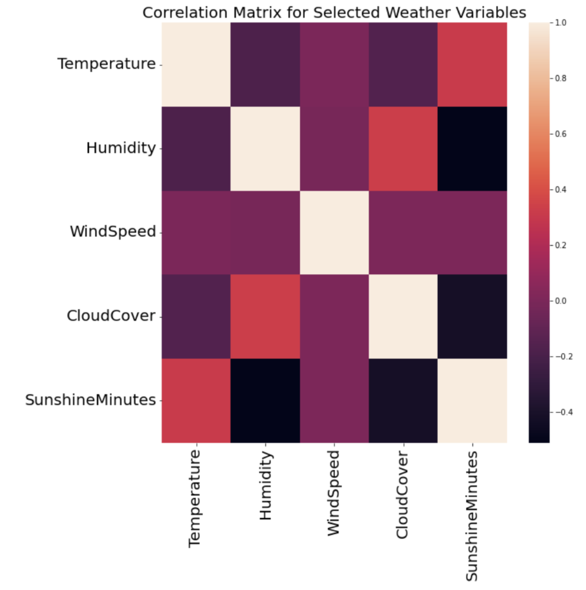
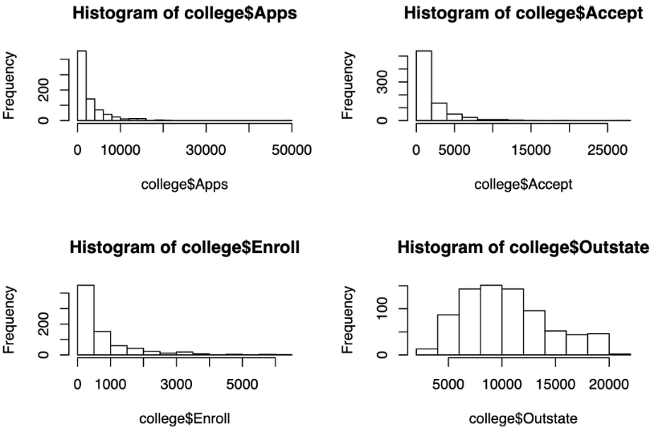
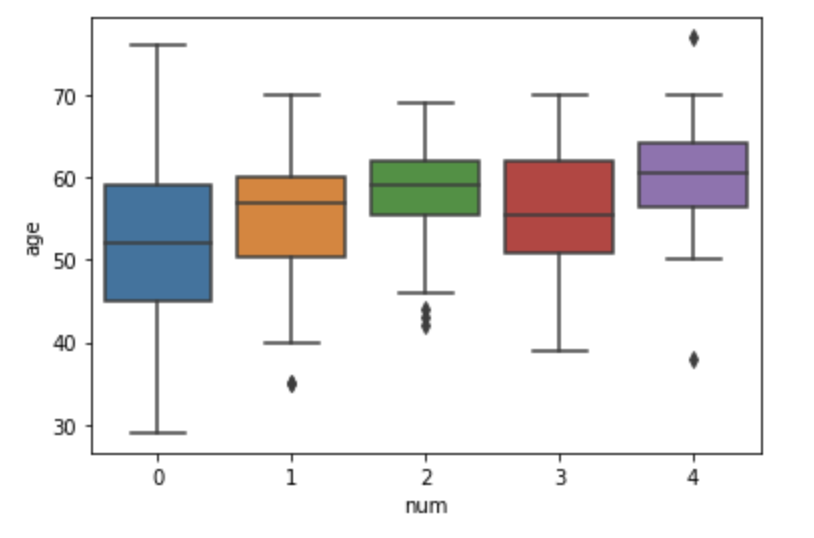
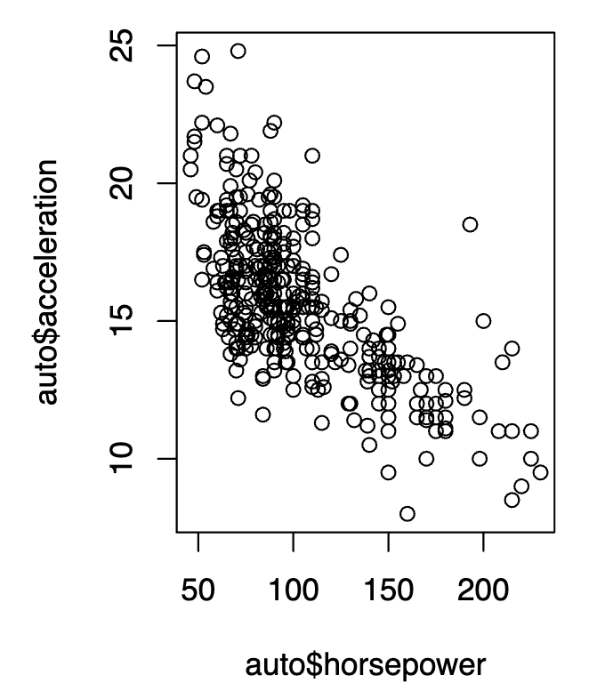

Exploratory Data Analysis
One of the most important parts of data science, and in my opinion, the most fun, is exploratory data analysis, or EDA. EDA involves the open-ended exploration of your data, with the use of tables, summary statistics, and a variety of visualization tools. I enjoy this part of the process the most, because it challenges my abilities to uncover hidden patterns and forces me to think outside the box. EDA takes a lot of trial and error, as not every visualization will provide you with meaningful takeaways. I enjoy creating visualizations with a variety of tools and packages, especially those with a variety of possible data encodings, whether it's color, size, shape, or text. An example is this variable correlation matrix, coded in Python, which has a great heatmap feature to aid in the viewer's understanding of the relationships between variables, and as well as trends in correlation across all of the variables.
Another great tool for improving dimensionality and uncovering patterns in EDA is using small multiples. Small multiples are separate segments of data, and can involve any attribute. This could mean breaking up your boxplot into 'Yes' and 'No' categories for a binary variable, or visualizing four different scatterplots for four different age groups in your data. It can also involve a variety of attributes, of which the visualization to the right is an example. For this visualization, I was working with college admissions data in R, and I decided to create a grid of histograms that allowed me to easily compare the distribution and frequencies of the number of students who sent in applications, were accepted, were enrolled, and were out of state. Sometimes, visualizations might not be very informative on their own, but when compared to other segments or attributes in a grid-like manner, they can become extremely powerful to informing one's exploratory data analysis.
This visualization is another example of using segmentation to gain more information about your data. In this case, I was investigating a patient heart health dataset in Python, and the variable 'num' was a heart health indicator that I would later build a predictive model for, based on my conclusions from my initial analyses and visualizations. By creating a seaborn box plot visualization that segmented the data by num value, I could get a very strong understanding of what the age distributions across heart health scores were like, helping me get a better sense of whether or not age was a valuable predictor for the num indicator.
Although there are many advanced data visualization tools on the market, sticking to the basics of data visualization can be just as valuable to one's work, especially as a data scientist. When creating statistical models, it is extremely important to have a strong understanding about what variable relationships are like, especially if one is using such variables in a predictive model that has a series of conditions. Scatterplots such as this one, created in R, are a powerful resource for further understanding variable relationships, whether they are nonlinear or linear, and can allow for better model building, or indicate that a variable transformation might be necessary. They can also be a great way to identify anomalies and outliers in your data, aiding in the process of data cleaning. In this visualization, I used ggplot to visualize the relationship between acceleration and horsepower in cars, sourced from the mtcars dataset in R.